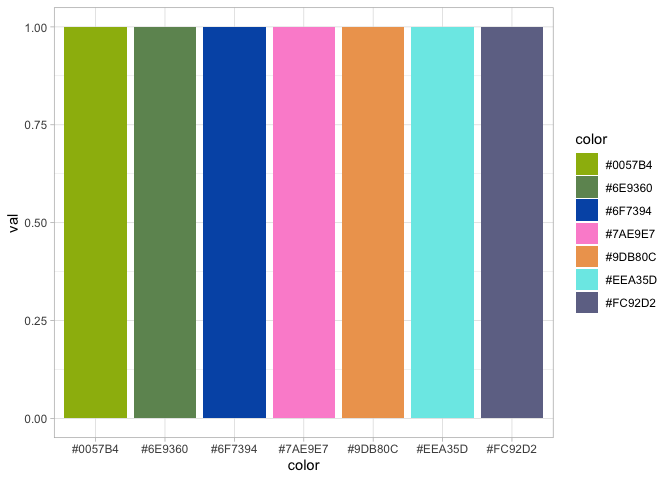
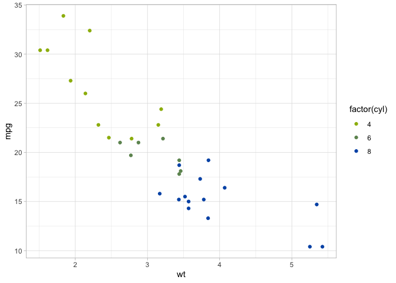
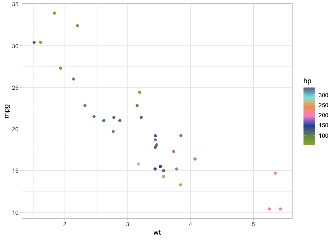

想做一个 JOJO 的 Color Palette
2022-12-15
几天前完成了 1-6 代 JoJo 的色盘。以后有机会加别的人物以及替身使者。
2022-12-05
起因是今天有人给我看了 Harry Potter color palette. 然后又发现了一个摇滚乐 album 的 color palette.
JOJO 主题的 color palette 的话感觉可以以人物和替身为单位来做。
2022-12-07
今天用徐伦的主题色做了一个 sample.
Install the JJBApalette package
1 | library(devtools) |
View colors in the jolyne palette
1 | jolyne_colors = data.frame(color = as.vector(jolyne_palette()), |

1 | data(mtcars) |

1 | ggplot(data = mtcars, aes(x = wt, y = mpg)) + geom_point(aes(color=hp)) + |
